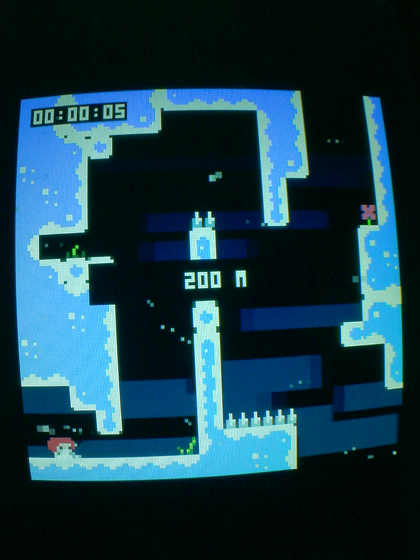
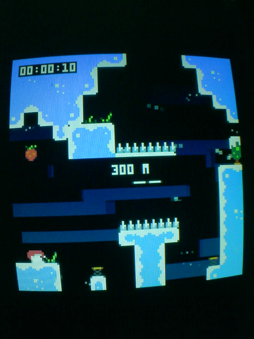

2026-07-18 · the play-test that clears rooms 1 & 2 · fake-08 port
test/playtest/celeste/celeste_playtest.py now clears Celeste rooms 1 and 2 ("100 M" → "200 M" → "300 M")
with no human on the controls, and checks itself over the wire. Each room needs several frame-precise
dashes/jumps a loose open-loop timeline can't land, so the input is solved offline against a physics
twin and delivered frame-synced to a new serial position-telemetry stream. Two twin-fidelity bugs the
telemetry exposed — move-before-update ordering and the 2-frame dash freeze — were the crux
for room 1; a driver-lag bug (reading one telemetry line per loop) was the crux for room 2. Result:
the same clears at frames 618 and 908, every run.
Room (0,0) decoded from the cart (__map__/__gff__): spawn at (8, 96), floor +
up-pointing spikes along the bottom, exit is the top gap at cols 13–14
(player.update: if this.y<-4 … next_room()). A physics twin + beam search proved
every solution needs ≥3 dashes (no ≤2-dash route exists), each landed on a specific ledge — and
that under ±2-frame serial jitter the best routes clear only 25–40 %. A fixed open-loop timeline would be a
flaky test. The owner chose "push for a real clear" and named the unlock:
solve it in sim; print the character position over serial.
-D TELEMETRY=1 prints, each frame,
T <frame> x y room.x room.y spd.x spd.y djump, reading the live cart's
player/room globals via the public Vm::ExecuteLua (runs in the cart
sandbox). It gives ground-truth position and a frame clock. It immediately confirmed the twin was
already pixel-exact on positions:
| quantity | hardware telemetry | twin |
|---|---|---|
| spawn | (8, 96), djump 1 | match |
| standing-jump apex | y = 77 (+19 px) | y = 77 |
| run stop (blocked by step) | x = 17 | x = 17 |
| dash launch spd | (3.5355, −3.5355) | match |
| walk speed | 2 px / frame @ spd 1 | match |
| same timeline twice | byte-identical trajectory → delivery is deterministic | |
Positions matched; timing did not — and frame-synced dashes need timing. Raw telemetry of the first dash showed velocity set at frame 378 but the position frozen for 3 frames, moving only at 384:
One box = one game-frame. The twin (naïvely: move-after-update, no freeze) moved on the dash frame — 3 frames early.
(1) Celeste's object loop runs obj.move(spd) before
obj.type.update(), so velocity set on frame f first moves the player on f+1.
(2) a dash sets freeze=2 — _update returns early for the next 2 frames.
Un-modelled, the twin ran 3 frames short per dash, so the 2nd dash's x arrived mid-air
(djump=0) and was dropped. Modelling both aligns the twin 1:1 with the firmware frame counter.
-D INPUT_HOLD_FRAMES=1 makes each serial byte hold exactly one frame (default 6 for manual
use); the driver re-sends every frame, locked to the telemetry counter. Delivering the freeze-aware plan:
CLEARED (0,0) → (1,0) at t = 12.05 s, frame 618.
The twin was generalised to any room (auto-detect spawn + fake_wall from the map). Room 2's
exit gap has no ledge under it, so the plain beam stalled at y=13 — its position-only dedup pruned
the djump the final up-dash needs; a full-state dedup (position, djump, freeze,
velocity) fixed it. Then two red herrings: the first hardware run matched the twin exactly, then stuck at
a wall — it looked like a fragile route (a jitter-robustness re-solve scored only ~0.47). But the
hardware is deterministic (room 1 clears identically every run), so the failure was the same
every time. Real cause: the multi-room driver read one telemetry line per loop, so at 60 Hz the OS
buffer backed up and by room 2 it acted on a stale frame counter, delivering inputs late.
Fix: drain the buffer each iteration, deliver against the newest counter → room 2 cleared
first try, reproducibly.
room.x/y goes (0,0)→(1,0)→(2,0) = 100 M → 200 M →
300 M. Reproduced many times, identical clear frames (618, 908) each run.

docs/hardware/evidence/2026-07-18-celeste-{200,300}m-clear.pngx for "jump", but Celeste is
k_jump=4=O / k_dash=5=X — so z/o jumps,
x dashes. x was silently dashing.test/playtest/celeste/celeste_playtest.py — resets, starts the game, delivers the embedded 97-frame plan
frame-synced, verifies over telemetry, exits 0 (PASS) / 1 (FAIL).test/playtest/celeste/celeste_solver/ — the physics twin + beam search that produced the plan;
solve.py re-prints the exact embedded PLAN (verified byte-identical).TELEMETRY (app) and INPUT_HOLD_FRAMES (input backend) — opt-in, off
by default.Vm::ExecuteLua reads live cart
state without touching the cart or the vendored source.pico-e32 · source worklog: docs/worklog/2026-07-18-celeste-playtest-clear.md